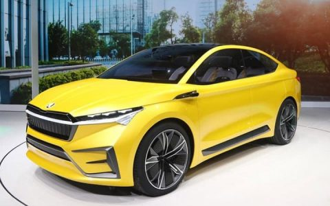

Автомобиль мечты

Автомобиль на самом деле является средством передвижения, без которого трудно представить современного человека. Автомобиль — незаменимый помощник, а жизнь без него — тяжелая.
Недавно я получила водительские права. Теперь я могу управлять автомобилем. Это очень круто!
Машиной моей мечты является Volkswagen Passat.
Фольксваген Пассат 2021 года внешне кажется таким же, как и его предшественник. Объясняется это тем, что в ходе в последней модернизации производитель лишь подкорректировал внешность седана. Основные изменения произошли как в технической части, так и в бортовом оборудовании, что сделало Passat более конкурентоспособным, чем Kia Optima или Toyota Camry.
Сравним Volkswagen Passat и Geely Tugella:
| Volkswagen Passat | Geely Tugella | ||
| Объем топливного бака, л | 66 | Объем топливного бака, л | 54 |
| Габариты кузова (Д x Ш x В), мм | 4780 x 1853 x 1527 | Габариты кузова (Д x Ш x В), мм | 4605 x 1878 x 1643 |
| Volkswagen Passat | |||
| Поддержка ручного переключения передач | Есть | Объем багажника, л | 639 |
| Синяя | Красная | Серая | |
| Описание автомобилей | |||
| Фото | Название | Описание | |
| BMW 5-Series | BMW 5-Series – немецкий автомобиль, представляющий бизнес-класс, который производится баварским концерном с 1972 года. В данный момент на автомобильном рынке России доступно 7 поколение модели, которое в 2020 году претерпело рестайлинг. | ||
| GLB | Одной из самых ожидаемых новинок от Мерседес в 2021 году будет рестайлинговый кроссовер GLB, который получит не только обновленный экстерьер, а и целый ряд технических улучшений, который сделает передвижение по городу и в условиях бездорожья еще динамичнее и безопаснее. | ||
|  | Enyaq | B 2021 году компания Шкода планирует вывести на мировой рынок первые серийные электрические модели, среди которых самой ожидаемой новинкой будет кроссовер Enyaq. Роскошный концепт модели (Vision In) был представлен еще в начале года и рпивлек внимание целым рядом эффектных дизайнерских решений. | |
| Renault Duster | Компактный внедорожник Рено Дастер 2021 модельного года начал предлагаться в России только в начале этого года, хотя в Европе под маркой Dacia он уже продавался несколько лет. Все дело в российской локализации, новую модель нужно было максимально адаптировать под наши условия, ведь для России Дастер является важным и популярным автомобилем. | ||